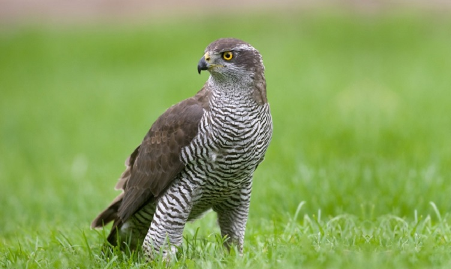
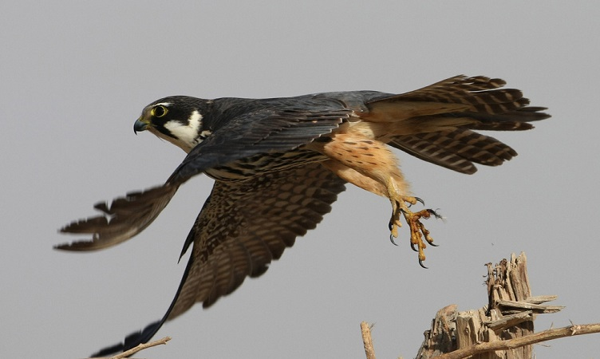
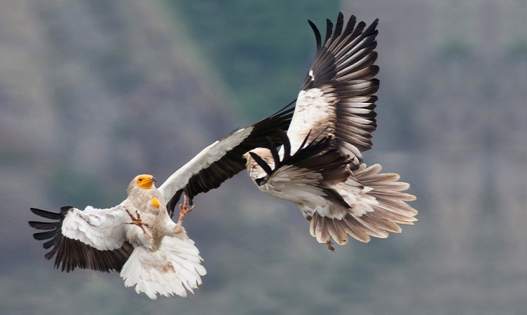

Големият ястреб

Големият ястреб е с дължината на тялото 53-66 cm. Хищна птица, 85% от храната му се състои от дребни и средни по размери птици, като дроздове, вранови, яребици. Останалите 15% се падат на бозайниците, като зайцевидни, гризачи и насекомоядни. За неговата ниска численост са отговорни предимно гълъбари и ловджии, които го отстрелват с предлог, че е техен конкурент и вредител.
Соколът орко

Соколът орко е с дължина на тялото 29 – 35 см. Храни се в полет с насекоми и дребни пойни птици. Обитава крайречни гори, ивици от дървета сред пасища и обработваеми земи, често в близост до водоеми.
Eгипетски лешояд

Дължината на тялото на египетския лешояд достига 60-70 (до 85) cm. Храни се предимно с мърша, но понякога улавя дребни животни като жаби, охлюви и всякакъв вид яйца. Яде също костенурки и яйца от едри птици като щрауса. По земята ходи много уверено, подобно на Кокошоподобните.